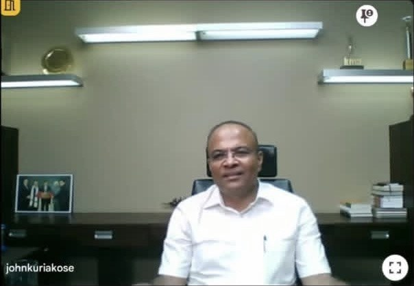
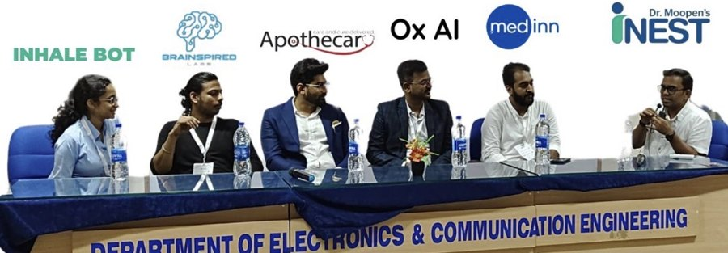
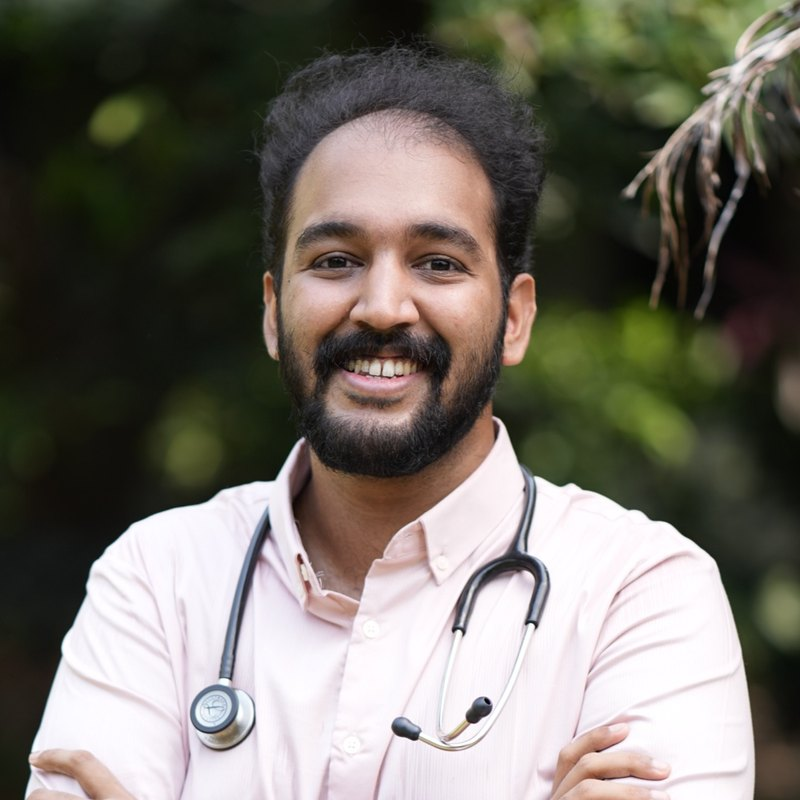

A Medinn initiative
People of Healthcare.
Meeting the MVPs of healthcare and MedTech in Kerala.
50 conversations with the founders, leaders and builders already shaping Kerala’s healthcare ecosystem.
The ecosystem
Healthcare is much bigger than hospitals.
Kerala’s healthcare ecosystem is diverse, and each participant contributes a different capability. But these worlds are often explored independently. Clinicians are frequently seen only as end users, when they can also be collaborators, product developers, researchers, advisors and builders.
Where it comes from
The conversations have already begun.
People of Healthcare grows out of meeting and learning from the people building healthcare, on stage, in sessions and one to one.

A session with Mr. John Kuriakose, founder of Dentcare Dental Lab
“His journey highlighted the transformative power of resilience, vision, and ethical entrepreneurship.” Moderated by Dr. Sidharth Narayanan.

HealthTech panel, IEDC Summit, NIT Calicut
Panelist on the HealthTech track in October 2024, on why healthcare needs engineers.
The questions
How well do we actually understand this ecosystem?
Who is manufacturing medical devices in Kerala?
Which companies are developing healthcare technologies?
What capabilities do our hospitals and manufacturers possess?
Where are the opportunities for local production and manufacturing?
What skills and talent are missing?
What does it take to move from a clinical observation to research, prototyping, validation, regulatory approval, manufacturing and commercialisation? And how can clinicians take part?
50 conversations, five lenses
More than founder profiles.
Each conversation is a profile of one person. Together, the 50 are meant to build an understanding of the whole ecosystem: its people, capabilities, limitations, opportunities and potential.
People
Who is shaping healthcare in Kerala, and what have they built?
Production
What can Kerala develop, manufacture and produce locally? Where do we depend on external markets?
Talent
What skills and expertise exist? What is missing, and how can we build it?
Innovation
What does the journey from a problem to a commercial healthcare solution actually involve?
Pipelines
What infrastructure, funding, mentorship, partnerships, distribution and regulatory pathways are needed to reach execution?
Who we will speak to
Not only MedTech founders.
- Entrepreneurs and CEOs
- Key opinion leaders
- Hospital founders and administrators
- Medical device manufacturers
- Diagnostics leaders
- Researchers and investors
- Others with an important stake in the industry
Knowledge that clinicians can use.
For doctors to take part meaningfully, they need to understand the industry, know the people operating within it and appreciate how healthcare innovations are brought to life. People of Healthcare exists to make that knowledge accessible to clinicians and medical students.
Two initiatives, one ecosystem
From knowledge to opportunity.
Medinn begins with two initiatives, because there are two sides to understanding healthcare: the people who will shape its future, and the people already building it.
Initiative 01
Before I Leave Medical College
A personal editorial series on medical education and what it could enable, from the perspective of a student about to leave it. It surfaces the gaps and the unmet needs students and doctors see.
Initiative 02
People of Healthcare
The industry side: the people, organisations, capabilities and pathways that could help clinicians and students turn problems into research, products and ventures.
This is not a promise that every conversation will lead to a business or a partnership. It is the possibility created when knowledge about an ecosystem becomes more accessible and its participants become better connected.
Take part
Know someone who should be among the 50?
Healthcare becomes stronger when the people who understand its problems are connected to the people who have the capabilities to solve them.
Nominate someone
A founder, leader, manufacturer or clinician-builder in Kerala’s healthcare ecosystem whose work deserves to be understood.
Be part of the 50
If you are building or leading in Kerala healthcare, we would like to hear your story.
Clinicians and students
Follow along to learn the industry and the people in it, and to find ways to contribute.
Partners and institutions
Hospitals, institutes and organisations that want to help map and strengthen the ecosystem.

Medinn · Healthcare Intelligence & Media
Understanding the people, ideas, businesses and technologies shaping healthcare.
Dr. Sidharth Narayanan · medinnnetworking@gmail.com · LinkedIn